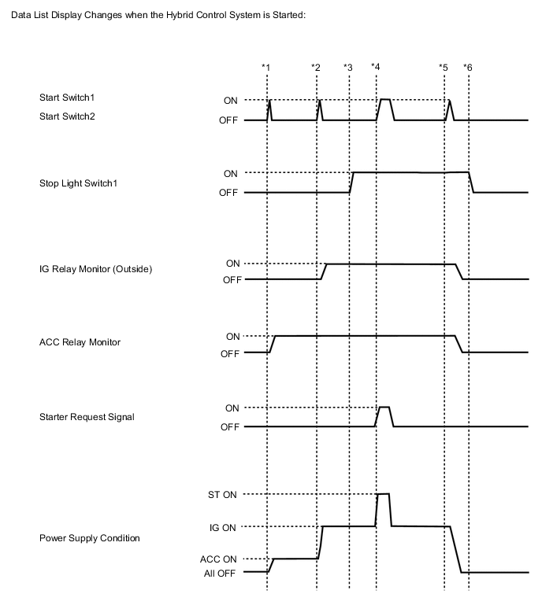
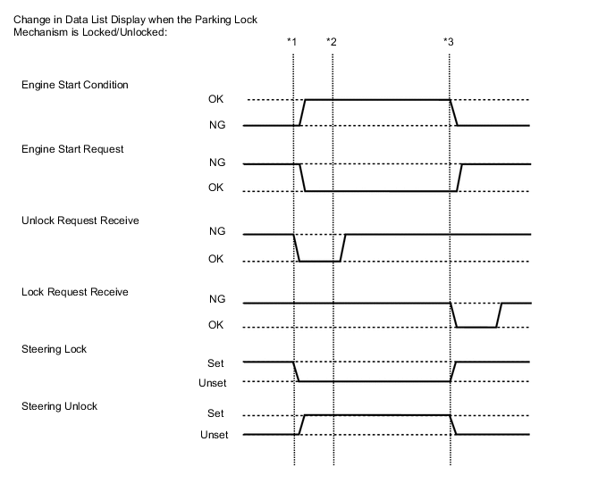

DATA LIST
Tech Tips
Using the GTS to read the Data List allows the values or states of switches, sensors, actuators and other items to be read without removing any parts. This non-intrusive inspection can be very useful because intermittent conditions or signals may be discovered before parts or wiring is disturbed. Reading the Data List information early in troubleshooting is one way to save diagnostic time.
Note
In the table below, the values listed under "Normal Condition" are reference values. Do not depend solely on these reference values when deciding whether a part is faulty or not.
Connect the GTS to the DLC3.
Turn the power switch on (IG).
Turn the GTS on.
Enter the following menus: Body Electrical / (desired system) / Data List.
Read the Data List according to the display on the GTS.
| Tester Display | Measurement Item | Range | Normal Condition | Diagnostic Note |
|---|---|---|---|---|
| Stop Light Switch1 | State of brake pedal | OFF or ON | OFF: Brake pedal released ON: Brake pedal depressed |
|
| Start Switch1 | Power switch 1 status | OFF or ON | OFF: Power switch not pressed ON: Power switch pressed |
|
| Start Switch2 | Power switch 2 status | OFF or ON | OFF: Power switch not pressed ON: Power switch pressed |
|
| Latch Circuit | Status of IG related backup circuits | OFF or ON | OFF: Power switch off ON: Power switch on (IG) |
|
| Starter Request Signal | Hybrid control system start request signal status | OFF or ON | OFF: The power switch is not pressed ON: With park (P) selected and the brake pedal depressed, the power switch is pressed and held |
|
| ACC Relay Monitor | ACC relay activation | OFF or ON | OFF: Power switch off ON: Power switch on (ACC) |
When the power switch is on (IG), ON is displayed. |
| Vehicle Speed Signal | Vehicle being driven or stopped | Stop or Run | Stop: Vehicle stopped Run: Vehicle being driven at 5 km/h (3 mph) or more |
- |
| Shift P Signal Pulse | P position signal status | Normal1, Normal2, Normal3, Error1, Error2, Error3 or Unknown | Normal2: Signal normal and park (P) selected Normal3: Signal normal and R, N, D or B selected Normal4: Signal normal and N selected Normal5: Signal normal and R, D or B selected Unknown: Other |
Use this item to determine if the P position signal is malfunctioning. |
| Power Supply Condition | Power supply state | All OFF, ACC ON, IG ON or ST ON | All OFF: Power switch off (ACC and IG) ACC ON: Power switch on (ACC) IG ON: Power switch on (IG) ST ON: Sending hybrid control system start request signal |
- |
| Starter SW Sig Mismatch | Power switch signal 1 and 2 do not match | No or Yes | No: Switch normal Yes: Switch malfunctioning (Power switch signal 1 and 2 do not match) |
Even when Yes is displayed, the hybrid control system can be started. However, emergency hybrid control system off while driving by pressing and holding the power switch, and when the brakes are malfunctioning, emergency hybrid control system on by pressing and holding the power switch cannot be performed. |
| Park Signal Mismatch | P position signal malfunction | No or Yes | No: Signal normal Yes: Signal malfunction (signals via CAN communication and direct line do not match) |
Even when Yes is displayed, it is still possible to turn the power switch off (the power source mode will not be stuck in on (ACC) or on (IG)). |
| Key Certif Wait T-Out | Key verification malfunction | No or Yes | No: Verification normal Yes: Verification error (Detected due to the electrical key transmitter sub-assembly ID code and the ID code stored in the certification ECU (smart key ECU assembly) not matching) |
When the hybrid control system cannot be started due to a key verification error, Yes is displayed. |
| IG Circuit | IG relay coil circuit malfunction | OK or NG | OK: Circuit normal NG: Circuit malfunctioning |
|
| IG Relay Monitor (Outside) | IG relay coil voltage monitor status | OFF or ON | OFF: Power switch off ON: Power switch on (IG) |
|
| IG Relay Monitor (Inside) | IG relay activation | OFF or ON | OFF: Power switch off ON: Power switch on (IG) |
|
| IGB Request | IGB signal output monitor status | OFF or ON | OFF: IGB signal not output ON: IGB signal output |
|
| Number of Diagnosis Code | Number of DTCs | 0 to 255 | - | - |

Tech Tips
To check if the Data List display changes, get into the vehicle while carrying an electrical key transmitter sub-assembly and perform the following operations with the power switch off and park (P) selected.*1: Press the power switch with the brake pedal released and check that the power switch turns on (ACC).
*2: Press the power switch with the brake pedal released and check that the power switch turns on (IG).
*3: Depress the brake pedal (stop light switch assembly is on).
*4: Press the power switch with the brake pedal depressed and check that the hybrid control system starts.
*5: Press the power switch with the brake pedal depressed and check that the power switch turns off.
*6: Release the brake pedal.
| Tester Display | Measurement Item | Range | Normal Condition | Diagnostic Note |
|---|---|---|---|---|
| Key Low Battery | Transmitter battery depleted | No or Yes | No: Transmitter battery not depleted Yes: Transmitter battery depleted |
The electrical key transmitter sub-assembly sends voltage information to the certification ECU (smart key ECU assembly) when it is transmitting. "Yes" is displayed for the Data List item "Key Low Battery" when this voltage information indicates 2.2 V or less. This Data List item should be checked when the electrical key transmitter sub-assembly is at room temperature (example: at -20°C (-4°F), "Yes" may be displayed even if the transmitter battery is new). |
| # Codes | Number of DTCs | 0 to 255 | - | - |
| Immobiliser | Immobiliser system status determined by certification ECU (smart key ECU assembly) | Set or Unset | Set: Immobiliser set (hybrid control system start prohibited) (power switch off) Unset: Immobiliser unset (hybrid control system start permitted) (power switch on (ACC) or on (IG)) |
The hybrid control system cannot be started when Set is displayed. Tech Tips
|
| Steering Lock Sleep Cond | Hybrid vehicle control ECU sleep availability | No or Yes | No: Sleep not available Yes: Sleep available |
- |
| Steering Lock Start Cond | Hybrid vehicle control ECU wake up signal status | No or Yes | No: Wake up signal not sent Yes: Wake up signal sent |
- |
| Engine Start Condition | Status of hybrid control system start permission signal determined by hybrid vehicle control ECU and sent to certification ECU (smart key ECU assembly) | NG or OK | NG: Hybrid control system start prohibited OK: Hybrid control system start permitted |
|
| Sensor Value | History of malfunction of position sensor in steering lock ECU (steering lock actuator or upper bracket assembly) (DTC B2781 is stored)* | OK or NG(Past) | OK: History of malfunction for the lock or unlock sensor in the steering lock ECU (steering lock actuator or upper bracket assembly) does not exist. NG(Past): History of both the lock and unlock sensors in the steering lock ECU (steering lock actuator or upper bracket assembly) being on exists. (Under normal operation, neither sensor is on.) |
Not applicable |
| Power Supply Short | History of signal error (short) sent from certification ECU (smart key ECU assembly) to steering lock ECU (steering lock actuator or upper bracket assembly) (DTC B2782 is stored)* | OK or NG(Past) | OK: History of motor power source short does not exist NG(Past): History of motor power source short exists |
Not applicable |
| Motor Driver Short | History of malfunction (short) in steering lock ECU (steering lock actuator or upper bracket assembly) motor circuit (DTC B2781 is stored)* | OK or NG(Past) | OK: History of short in the motor circuit does not exist NG(Past): History of short in the motor circuit exists |
Not applicable |
| Lock/Unlock Receive | History of receiving an unlock request signal | No or Yes | No: History of receiving an unlock request signal does not exist Yes: History of receiving an unlock request signal exists |
- |
| Lock Bar Stuck Error | History of steering not being able to unlock properly when steering lock operates for a certain period of time* | OK or NG(Past) | OK: History of steering lock being stuck does not exist NG(Past): History of steering lock being stuck exists |
Not applicable |
| Engine Start Request | Immobiliser unset (hybrid control system start permitted) signal from certification ECU (smart key ECU assembly) to ID code box (immobiliser code ECU) received state | OK or NG | OK: Signal received NG: Signal not received |
|
| S Code Check | Verification result between certification ECU (smart key ECU assembly) and ID code box (immobiliser code ECU) | OK or NG | OK: Verification result normal NG: Verification result abnormal |
When NG is displayed:
|
| L Code Check | Verification result between ID code box (immobiliser code ECU) and hybrid vehicle control ECU | OK or NG | OK: Verification result normal NG: Verification result abnormal |
When NG is displayed:
|
| Unlock Request Receive | Unlock request signal received state | OK or NG | OK: Unlock request signal received within 10 seconds of power switch being turned on (IG) or on (ACC) or of a hybrid control system start operation being performed NG: Power switch not turned on (IG) or on (ACC) and hybrid control system start operation not being performed |
|
| Lock Request Receive | Lock request signal received state | OK or NG | OK: Lock request signal received within 10 seconds of any of the doors being opened with park (P) selected and power switch off. NG: Except above |
If OK is not displayed even though the parking lock conditions are met, the certification ECU (smart key ECU assembly) may be malfunctioning. |
| S Code Check(Past) | Verification result history between the certification ECU (smart key ECU assembly) and ID code box (immobiliser code ECU) | OK or NG(Past) | OK: History of abnormal verification result does not exist NG(Past): History of abnormal verification result exists |
- |
| L Code Check(Past) | Verification result history between the ID code box (immobiliser code ECU) and hybrid vehicle control ECU | OK or NG(Past) | OK: History of abnormal verification result does not exist NG(Past): History of abnormal verification result exists |
- |
| Steering Lock | State of whether hybrid vehicle control ECU has determined gearshift control is locked | Unset or Set | Unset: Lock not confirmed Set: Lock confirmed |
When Unset is displayed, the parking lock mechanism is not locked. |
| Steering Unlock | State of whether hybrid vehicle control ECU has determined gearshift control is unlocked | Unset or Set | Unset: Unlock not confirmed Set: Unlock confirmed |
When Unset is displayed, the parking lock mechanism is not unlocked (the hybrid control system cannot be started). |
| Engine Start Indicator | Key indicator display | OFF or ON | Customize setting displayed | - |
| Open in IG2 | History of IG2 input of the steering lock ECU (steering lock actuator or upper bracket assembly)* | OK or NG(Past) | OK: History of open in IG2 terminal circuit exists NG(Past): No history of open in IG2 terminal circuit exists |
Not applicable |
*: Although the item is display on the GTS, it is not applicable to this vehicle.

Tech Tips
To check if the Data List display changes, get into the vehicle while carrying an electrical key transmitter sub-assembly and perform the following operations with the power switch off and park (P) selected.*1: Press the power switch with the brake pedal released and check that the power switch turns on (ACC).
*2: Press the power switch with the brake pedal released and check that the power switch turns on (IG).
*3: Press the power switch and check that the power switch turns off.
| Tester Display | Measurement Item | Range | Normal Condition | Diagnostic Note |
|---|---|---|---|---|
| Vehicle Speed Meter | Vehicle speed | Min.: 0, Max.: 255 | Almost same as actual vehicle speed (Speedometer tester) | - |
| Tester Display | Measurement Item | Range | Normal Condition | Diagnostic Note |
|---|---|---|---|---|
| Stop Light Switch | Brake pedal signal | OFF or ON | OFF: Brake pedal released ON: Brake pedal depressed |
- |
ACTIVE TEST
Tech Tips
Using the GTS to perform Active Tests allows relays, VSVs, actuators and other items to be operated without removing any parts. This non-intrusive functional inspection can be very useful because intermittent operation may be discovered before parts or wiring is disturbed. Performing Active Tests early in troubleshooting is one way to save diagnostic time. Data List information can be displayed while performing Active Tests.
Connect the GTS to the DLC3.
Turn the power switch on (IG).
Turn the GTS on.
Enter the following menus: Body Electrical / Entry&Start / Active Test.
Perform Active Test according to the display on the GTS.
| Tester Display | Measurement Item | Control Range | Diagnostic Note |
|---|---|---|---|
| Power/Engine SW Light | Power switch light | OFF/ON | When performing this Active Test, make sure the following conditions are met: The power switch illumination is off (15 seconds or more have elapsed since it turned off) and the power switch is on (ACC) or on (IG), or the hybrid control system is started. |